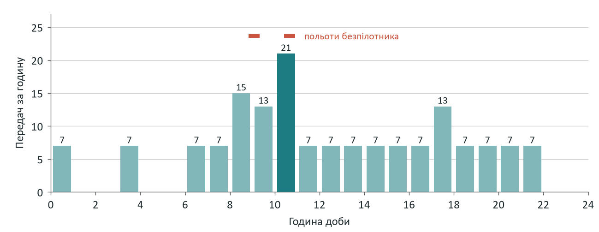
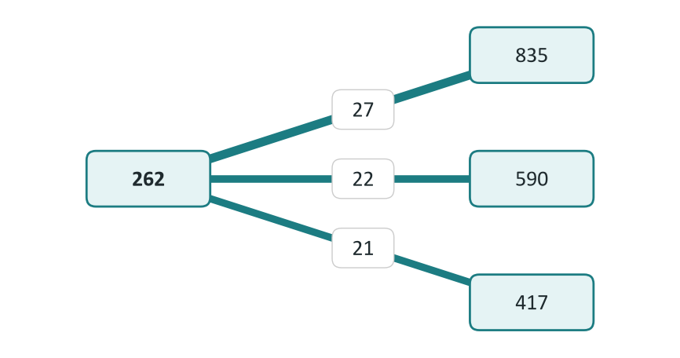

Тема 4. Відповіді
Вправа № 1. Хто з ким говорить
Журнал поста П1 містить 21 передачу за годину, від 10:00 до 11:00. Зміст передач зашифровано, тому всі відповіді спираються на метадані.
Крок 1. За журналом у мережі працювали чотири радіостанції. Скільки передач зробила кожна, показує таблиця.
| Радіостанція | Скільки передач |
|---|---|
| 262 | 12 |
| 835 | 4 |
| 590 | 3 |
| 417 | 2 |
Крок 2. Радіостанція відповідає попередній, якщо починає передачу не пізніше ніж через 30 с після кінця попередньої передачі. Приклад. Передача 1 радіостанції 262 почалася о 10:02:10 і тривала 9 с, тобто закінчилася о 10:02:19. Передача 2 радіостанції 417 почалася о 10:02:24, через 5 с. Отже, радіостанція 417 відповіла радіостанції 262.
Наступна таблиця показує для кожної передачі, коли вона закінчилася і якій радіостанції відповідає.
| № | Початок | Кінець | Радіостанція | Кому відповідає |
|---|---|---|---|---|
| 1 | 10:02:10 | 10:02:19 | 262 | нікому |
| 2 | 10:02:24 | 10:02:30 | 417 | 262 |
| 3 | 10:03:02 | 10:03:10 | 262 | нікому |
| 4 | 10:03:15 | 10:03:22 | 835 | 262 |
| 5 | 10:04:01 | 10:04:09 | 262 | нікому |
| 6 | 10:04:40 | 10:04:49 | 262 | нікому |
| 7 | 10:04:55 | 10:05:00 | 590 | 262 |
| 8 | 10:16:20 | 10:16:41 | 262 | нікому |
| 9 | 10:16:48 | 10:17:00 | 835 | 262 |
| 10 | 10:18:05 | 10:18:20 | 262 | нікому |
| 11 | 10:18:26 | 10:18:36 | 590 | 262 |
| 12 | 10:20:10 | 10:20:28 | 262 | нікому |
| 13 | 10:21:30 | 10:21:44 | 262 | нікому |
| 14 | 10:21:50 | 10:21:59 | 417 | 262 |
| 15 | 10:24:02 | 10:24:18 | 835 | нікому |
| 16 | 10:24:25 | 10:24:32 | 262 | 835 |
| 17 | 10:27:40 | 10:27:48 | 590 | нікому |
| 18 | 10:27:55 | 10:28:01 | 262 | 590 |
| 19 | 10:33:10 | 10:33:15 | 835 | нікому |
| 20 | 10:33:20 | 10:33:24 | 262 | 835 |
| 21 | 10:41:00 | 10:42:35 | 262 | нікому |
На схемі зв’язків кружок позначає радіостанцію, а лінія з’єднує дві радіостанції, які розмовляли. Число біля лінії показує, скільки разів одна з них відповіла іншій.
| Пара радіостанцій | Скільки відповідей |
|---|---|
| 262 і 835 | 4 |
| 262 і 590 | 3 |
| 262 і 417 | 2 |
Від кружка 262 йдуть лінії до всіх інших радіостанцій. Інших ліній на схемі немає.
Діаграма має по одному стовпчику на кожну чверть години. Передачу зараховують до тієї чверті, у якій вона почалася.
| Чверть години | Скільки передач почалося |
|---|---|
| від 10:00 до 10:15 | 7 |
| від 10:15 до 10:30 | 11 |
| від 10:30 до 10:45 | 3 |
| від 10:45 до 11:00 | 0 |
Крок 3. Усі інші говорять з радіостанцією 262, а між собою не говорять. Ця радіостанція зробила найбільше передач: 12 із 21. Найімовірніше, це радіостанція командира мережі.
Найактивніше мережа працювала від 10:15 до 10:30: 11 передач. Такий сплеск може означати, що мережа до чогось готується. Це лише припущення: журнал не показує, до чого саме.
Уважний учень помітить ще три речі. Перша: мережа змінила частоту. О 10:33:10 мережа вже працює на частоті 310,5 МГц, а не на 300 МГц. Друга: остання передача радіостанції 262, о 10:41:00, тривала 95 с, а решта передач не довші за 21 с. Після цієї передачі мережа в ефір не виходить. Третя: радіостанція 262 кілька разів починала розмову, а відповіді пост не прийняв: о 10:04:01, о 10:20:10 і о 10:41:00.
З журналу не можна дізнатися, про що говорили: зміст зашифровано. Не можна дізнатися й того, хто саме говорив. Журнал не показує радіостанцій, сигналів яких пост не приймає. У навчальному районі така радіостанція є: радіостанція підрозділу 2 з номером 708 (джерело Д3 з теми 1). Можливо, цю радіостанцію викликала радіостанція 262, коли пост не прийняв відповіді.
Крок 4. Пост вимірює напрямок із похибкою до 3°, тому напрямки на одну радіостанцію в журналі різняться. Один вимір не розрізняє сусідніх об’єктів. Напрямок 86° пост виміряв і для радіостанції 835 (передача 9), і для радіостанції 262 (передача 10). Цей напрямок відрізняється не більш як на 3° і від напрямку на екіпаж безпілотника (87°), і від напрямку на командний пункт (84°).
Усі виміри однієї радіостанції разом розрізняють сусідні об’єкти. Кожен вимір відрізняється від справжнього напрямку не більш як на 3°. Отже, справжній напрямок не менший за найбільший вимір мінус 3° і не більший за найменший вимір плюс 3°. Для радіостанції 262 це від 86° − 3° = 83° до 82° + 3° = 85°. У цих межах лежить напрямок лише на один об’єкт плану: командний пункт (84°).
| Радіостанція | Напрямки з журналу | Межі справжнього напрямку | Об’єкт плану в цих межах |
|---|---|---|---|
| 262 | від 82° до 86° | від 83° до 85° | командний пункт (84°) |
| 835 | від 86° до 89° | від 86° до 89° | екіпаж безпілотника (87°) |
| 590 | від 108° до 110° | від 107° до 111° | радар 2 (111°) |
| 417 | від 56° до 59° | від 56° до 59° | підрозділ 1 (58°) |
Найімовірніше, кожна радіостанція стоїть біля об’єкта з останнього стовпця. Простіший спосіб дає ту саму відповідь: знайти об’єкт, напрямок на який найближчий до середини напрямків радіостанції.
Проте напрямок показує лише лінію від поста, а не відстань. Радіостанція може стояти в будь-якій точці цієї лінії, навіть там, де на плані немає жодного об’єкта. Тому ці місця лишаються припущенням.
Знайти радіостанцію на лінії допоміг би ще один напрямок на неї, виміряний з другого місця. Дві лінії перетнуться там, де стоїть радіостанція. Про це йдеться в темі 6.
Відповідь до кроку 4 зараховують, якщо для кожної радіостанції названо об’єкт із таблиці й запропоновано вимір із поясненням. Зараховують і відповідь «відстань до радіостанції»: напрямок і відстань разом теж дають точку. Міркування про межі справжнього напрямку не обов’язкове.
Учителеві. У моделі навчального району радіостанції мають такі номери. 262: радіостанція командного пункту. 835: радіостанція екіпажу безпілотника. 590: радіостанція обслуги радара 2. 417: радіостанція підрозділу 1. Другий політ безпілотника починається о 10:25, під час сплеску.
Контрольні запитання
Які сигнали приймає радіорозвідка? Наведіть три приклади.
Відповідь. Усе, що люди й машини передають по радіо. Приклади: переговори по радіостанціях, відео й команди керування безпілотників, сигнали супутникових терміналів.
Назвіть етапи перехоплення за порядком. На якому з них стають відомі перші метадані?
Відповідь. Огляд ефіру, виявлення сигналу (детектування), демодуляція, дешифрування, контент-аналіз. Перші метадані стають відомі вже на етапі виявлення: це частота, час початку, тривалість і напрямок на передавач. Номер радіостанції розвідка дізнається пізніше, після демодуляції: він стоїть у службовій частині передачі.
Чому зашифровану розмову не прочитати без ключа? Які три слабкі місця шукає розвідка?
Відповідь. Шифрування перетворює повідомлення на набір знаків, який без ключа не можна прочитати. Сучасний ключ не можна вгадати: варіантів забагато. Слабкі місця такі. Перше: шифруванням не користуються. Друге: у деяких системах зв’язку шифрування немає зовсім. Третє: шифрують не все, і службову частину часто передають відкрито.
Чим аналіз трафіку відрізняється від контент-аналізу? Що можна дізнатися з метаданих?
Відповідь. Контент-аналіз розбирає зміст розмов. Аналіз трафіку вивчає метадані багатьох передач і змісту не потребує. З метаданих видно, хто з ким і як часто виходить на зв’язок, з якою радіостанцією говорять усі, коли активність мережі зростає і з якого напрямку приходять сигнали.
Що видає в ефірі ваш телефон, навіть коли ви не розмовляєте? Як зменшити слід телефона?
Відповідь. Мережа знає, через яку базову станцію працює телефон, а отже й приблизне місце телефона. Wi-Fi і Bluetooth показують назву пристрою. Щоб зменшити цей слід, вимикайте Bluetooth і геолокацію, коли вони не потрібні, і не давайте телефону назву зі своїм прізвищем.
Творчі та групові завдання
Завдання 1. Перша ситуація: виявлення сигналу, яке називають ще детектуванням. Друга: демодуляція. Третя: контент-аналіз. Четверта: дешифрування. У четвертій ситуації бракує ключа.
Завдання 2. Передача починається на секунді 1 запису і триває 20,64 с: це 344 біти, тобто 43 байти. Службова частина читається без ключа: «ВІД 262 ДО 835». Зміст відкриває ключ 139: «Зліт о 10:25, посадка о 10:55». У журналі вправи це передача № 8. Ключів завдовжки 128 біт є 340 282 366 920 938 463 463 374 607 431 768 211 456. Комп’ютер, який пробує мільярд ключів за секунду, перебирав би їх 10 790 283 070 806 014 188 970 років: це приблизно у 780 мільярдів разів довше, ніж існує Всесвіт. Швидкість комп’ютера тут є припущенням: у мільйон разів швидший комп’ютер теж не встигне.
Завдання 3. У журналі за добу 160 передач. Найактивніша година від 10:00 до 11:00: 21 передача. Це година журналу з вправи. Друга за активністю година від 8:00 до 9:00: 15 передач. Обидва сплески пов’язані з польотами безпілотника, які почалися о 08:50 і о 10:25: перед зльотом мережа говорить найбільше. Найчастіше говорять радіостанції 262 і 835: 27 відповідей. Пара 262 і 590 має 22 відповіді, пара 262 і 417 має 21 відповідь. У 18 годинах доби мережа проводить перевірку зв’язку: 7 передач на початку години. Коли мережа найактивніша, найкраще показує стовпчаста діаграма: найвищий стовпчик видно одразу. Хто з ким говорить, найкраще показує схема зв’язків із числами біля ліній: видно, що всі говорять лише з радіостанцією 262. Таблиця потрібна там, де важать точні числа.
| Година доби | Скільки передач |
|---|---|
| від 0:00 до 1:00 | 7 |
| від 3:00 до 4:00 | 7 |
| від 6:00 до 7:00 | 7 |
| від 7:00 до 8:00 | 7 |
| від 8:00 до 9:00 | 15 |
| від 9:00 до 10:00 | 13 |
| від 10:00 до 11:00 | 21 |
| від 11:00 до 12:00 | 7 |
| від 12:00 до 13:00 | 7 |
| від 13:00 до 14:00 | 7 |
| від 14:00 до 15:00 | 7 |
| від 15:00 до 16:00 | 7 |
| від 16:00 до 17:00 | 7 |
| від 17:00 до 18:00 | 13 |
| від 18:00 до 19:00 | 7 |
| від 19:00 до 20:00 | 7 |
| від 20:00 до 21:00 | 7 |
| від 21:00 до 22:00 | 7 |
| Пара радіостанцій | Скільки відповідей |
|---|---|
| 262 і 835 | 27 |
| 262 і 590 | 22 |
| 262 і 417 | 21 |


Завдання 4. Зараховують опис, у якому названо, що перехопили, на якому етапі це вдалося і яке слабке місце використали. Випадок має бути підтверджено двома джерелами. Джерела незалежні, якщо жодне з них не переказує іншого.
Завдання 5. Готової відповіді немає. Про Марка стороння людина дізнається, де він буває щоранку, що щосереди він ходить до поліклініки і з ким говорить щовечора. Зараховують три правила, які зменшують цей слід. Приклад правила: вимикати геолокацію, коли вона не потрібна. Розповідати про власний телефон учні не мусять.